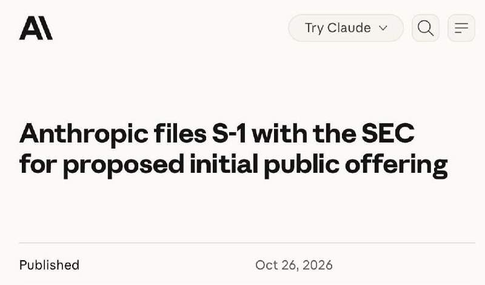
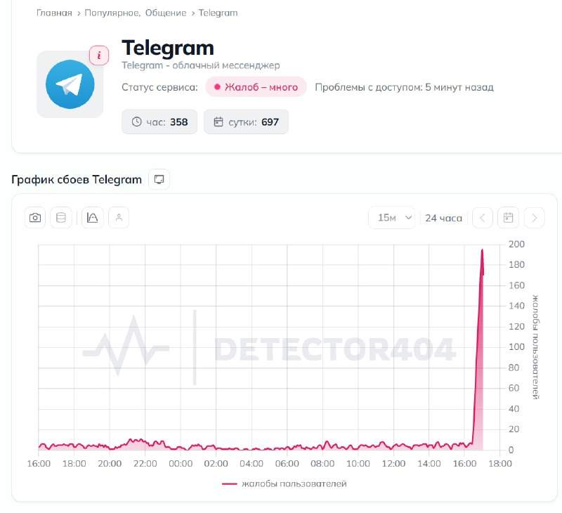
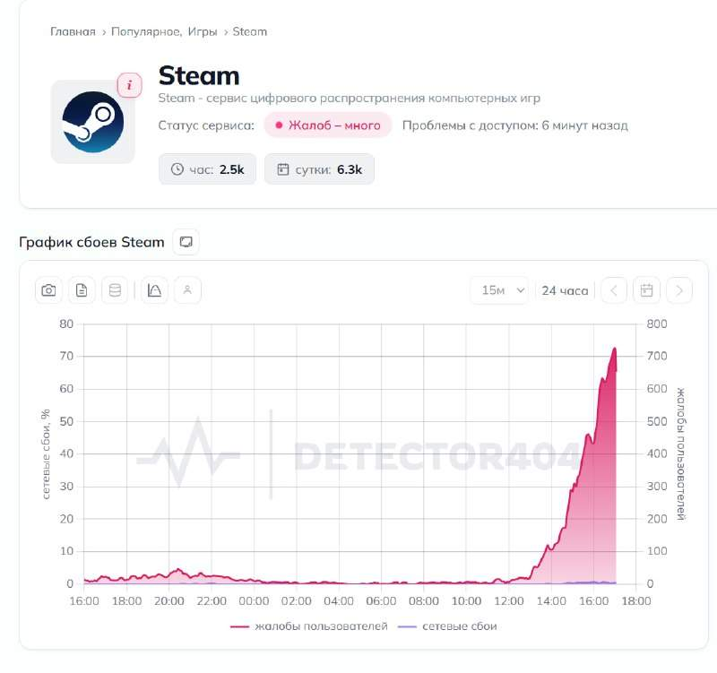
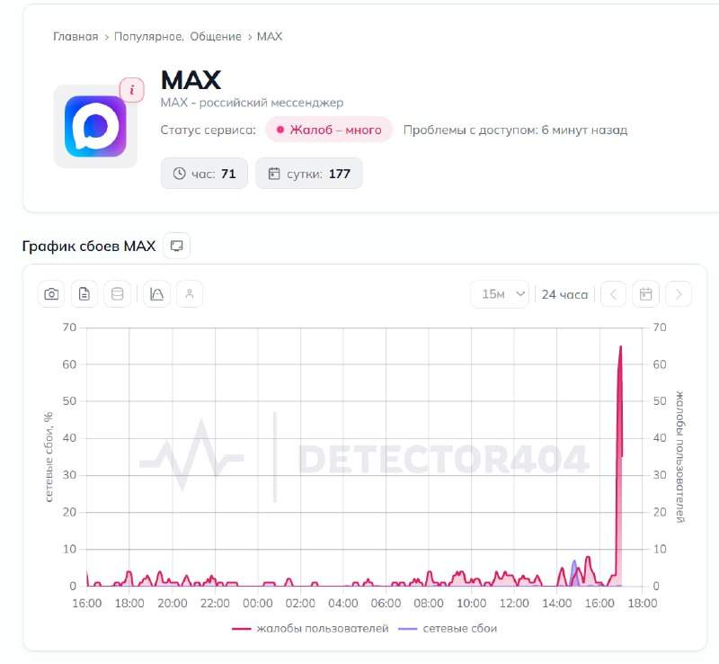
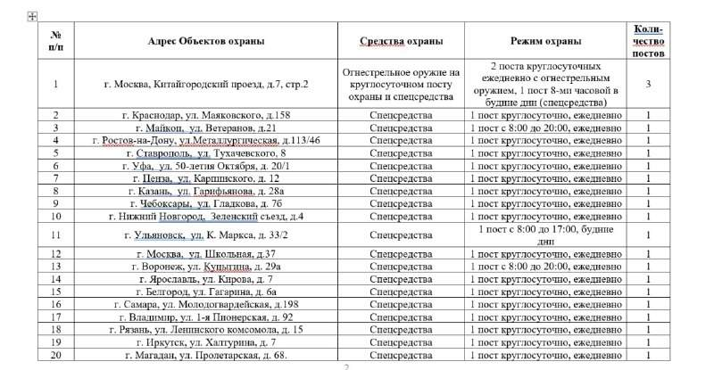
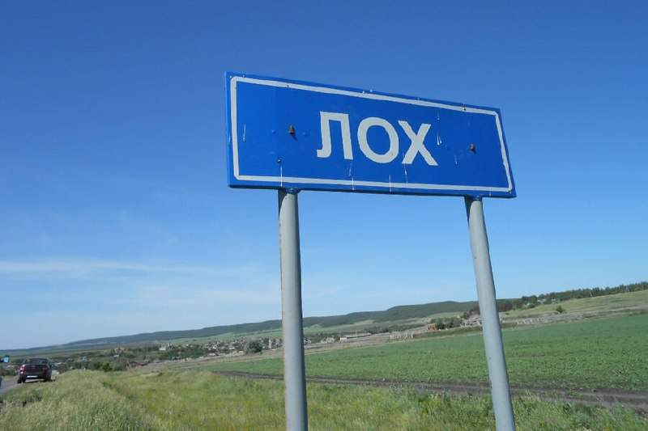
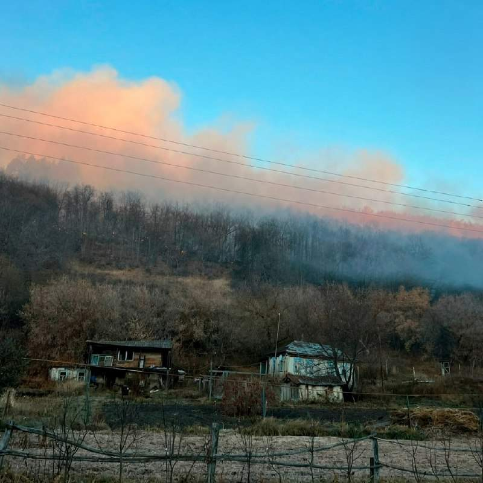

Сербия введёт санкции против России уже в марте — Вучич после поражения на выборах. @bankrollo
Сербия введёт санкции против России уже в марте — Вучич после поражения на выборах. @bankrollo
Банки просят ставить сертификаты Минцифры на все смартфоны россиян — РБК. Из-за зарубежных ограничений сайты банков не открываются. Поэтому банки просят заранее настроить все смартфоны под интернет в России. @bankrollo
В России побили рекорд по числу заражений ВИЧ и гепатитом в медучреждениях — Медвестник со ссылкой на Роспотребнадзор. В 2025 году официально зарегистрировали восемь очагов парентеральных инфекций, в которых заразились 104 пациента. Это число стало максимальным за 15 лет. В 2026 году расследуются уже 11 очагов в десяти регионах, где подозревают передачу ВИЧ и гепатитов при оказании медпомощи. Кроме того, в московском очаге выявлены 22 случая гепатита С. Также впервые за шесть лет зарегистрированы два случая передачи ВИЧ при переливании компонентов крови. Среди крупных очагов с подтвержденным распространением парентеральных гепатитов и ВИЧ за последние два года — заражение 82 человек в санатории в Кабардино-Балкарии. При оказании медпомощи 76 пациентов заразилось вирусным гепатитом С, у шести выявлены микст-инфекции. @bankrollo
На квартиру в новостройке в крупном городе россиянину нужно копить 26–35 лет, подсчитали аналитики. Для этого придётся откладывать 30-40% от дохода. @bankrollo
Вагон пассажирского поезда №11 Анапа – Москва повреждён из-за атаки дронов на станции Сомово в Воронеже. Пострадали пять пассажиров — РЖД. @bankrollo
Россияне стали покупать больше товаров повседневного спроса, но чаще выбирают более дешёвые продукты — Известия. @bankrollo
Банки могут начать отказывать в списании долгов бойцам СВО. Проблемы могут возникнуть у военнослужащих, заключивших контракт с декабря 2024 по апрель 2026 года, предупредили в Ассоциации российских банков (АРБ). Речь идет о задолженности до 10 млн рублей, по которой ранее уже началось судебное взыскание. После изменения закона кредитные организации имеют право списать долги только тех, кто заключил контракт с мая нынешнего года. @bankrollo
Ноябрьских распродаж на Wildberries и Ozon впервые не будет, продавцы не успели подготовить товары из Китая к «Чёрной пятнице» и 11.11 из-за атак беспилотников на склады и логистических проблем. Под угрозой и предновогодние акции — Forbes. @bankrollo
Акции Яндекса подскочили на 2,65% на фоне новостей о том, что все три суперкомпьютера компании уцелели после атак на дата-центры. В Т-Инвестициях назвали новость о сохранности суперкомпьютеров важным позитивным сигналом для компании. Как отметили аналитики, сохранность вычислительных мощностей критически важна для масштабирования ИИ, обучения собственных моделей и развития продуктов на их основе. Именно ИИ остаётся одним из ключевых драйверов долгосрочного роста Яндекса. @bankrollo

Anthropic выходит на биржу. Компания уже подала документы на IPO в американскую SEC. Разместить акции создатели Claude планируют под тикером ANT уже в ноябре. Это размещение может стать крупнейшим IPO в истории, обогнав Space X. @bankrollo
Два брата из Кот-д’Ивуара стали россиянами, вернувшись с СВО. «Воюя в штурмовых подразделениях, они заслужили право называться россиянами», отметили в МВД Чувашии. @bankrollo
Россиянам отказываются продавать автомобили в Казахстане. По данным Mash, местные дилеры отказывают, даже если у покупателей есть жильё и регистрация в стране. Негласный запрет, как сообщается, уже ввели в автосалоне Škoda в Алматы: там ссылаются на санкции ЕС и политику чешского концерна, а менеджеры срывают сделки на миллионы тенге. @bankrollo



Telegram, Max и Steam одновременно упали в России. @bankrollo
Сербия введёт санкции против России уже в марте — Вучич после поражения на выборах. @bankrollo https://t.me/bankrollo/68936 Сербия не будет вводить санкции против России — представитель победившей партии «Студенческий список». Сербия не откажется от российского газа и уважает Россию как великую державу, исторического партнёра и во многих случаях защитника. «Мы здесь не для того, чтобы удовлетворять иностранцев». @bankrollo
Мошенники массово заражают Android-телефоны россиян через приложения «Радар БПЛА», «ДПС радар. Топливо онлайн» и «ГосVPN», пишет CNews. После установки фейковых приложений вирус получает доступ к SMS, звонкам, уведомлениям Telegram, а также банковским и другим приложениям. @bankrollo

РКН получит огнестрельное оружие. Охранникам главного офиса РКН в Москве закупят пистолеты ПМ, наручники, дубинки и металлоискатели. На охрану 28 офисов РКН выделили уже 108 млн рублей. В январе 2026 года на проходной офиса в Москве убили сотрудника ведомства. @bankrollo


Российский Лох под угрозой уничтожения. У села уже третий день идут мощные пожары, огонь добрался до окраин населённого пункта. Лоховчане сами подвозят воду на тракторах, чтобы защитить свои дома и заповедные леса вокруг села. @bankrollo
Россиянин построил гараж мечты. В нём есть место для чёрной BMW, уютный бар, спальня, игровая зона с ТВ и даже ванна. Своя берлога с картонным Хасбиком обошлась мужчине всего в 7 млн рублей. @bankrollo
Путину предстоят «горячие деньки», неделя будет «сверхнасыщенной» — помощник президента Ушаков. Завтра Путин примет участие в «Форуме стран — экспортёров газа», а 28–29 октября — в форуме «Россия-Африка». @bankrollo
BMW предложила 40 тысячам сотрудников уволиться с выплатой компенсаций. Желающих оказалось так много, что они обвалили корпоративный сайт компании. При увольнении за каждый год работы BMW платит по €50 тысяч (5 млн рублей). @bankrollo https://t.me/bankrollo/68397 Microsoft предложила 27% всех сотрудников уволиться из-за внедрения ИИ. Предложения об увольнении с выплатой компенсаций получили 60 тысяч работников в США, Канаде, Индии и Великобритании. Сокращают даже вице-президентов. @bankrollo
В Москве арестовали экс-члена совета директоров Норникеля и Highland Gold. Станислава Лучицкого обвиняют в особо крупном мошенничестве, ему грозит до 10 лет колонии. @bankrollo
В Москве могут отключить интернет 27-29 октября в пределах Третьего транспортного кольца — Минцифры. @bankrollo
Путин поручил изменить выдачу поисковиков по теме абортов. Российские поисковики при поиске аборта должны выдавать ссылки на центры помощи семье, ранее заявила председатель Совфеда. @bankrollo
Зумеры сломают iPhone Duo за 500 тысяч рублей за один год. Экран в новом телефоне Apple выходит из строя через 75 тысяч складываний. Это ровно год, если открывать телефон 185 раз в день — средний показатель зумеров по исследованию в 2024 году. У миллениалов iPhone Duo продержится 2 года. @bankrollo
Пулемётчицу де Синяк показали в новостях НТВ. @bankrollo
Apple признала, что экран iPhone Duo может треснуть — Bloomberg. Владельцы слышат хруст при открытии, после чего вдоль сгиба появляется трещина. Apple пообещала заменить телефон через AppleCare. Поменять в России телефон за 500 тысяч рублей будет невозможно. @bankrollo